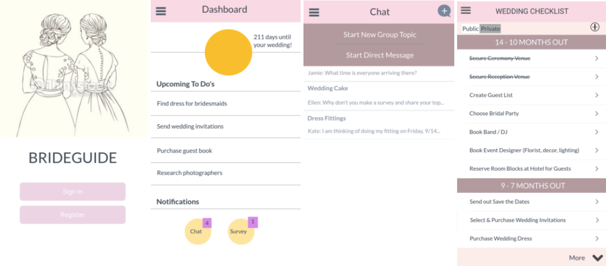
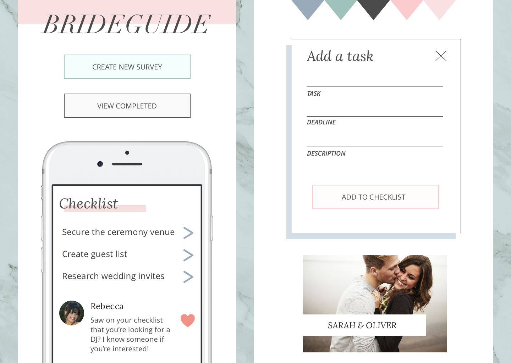
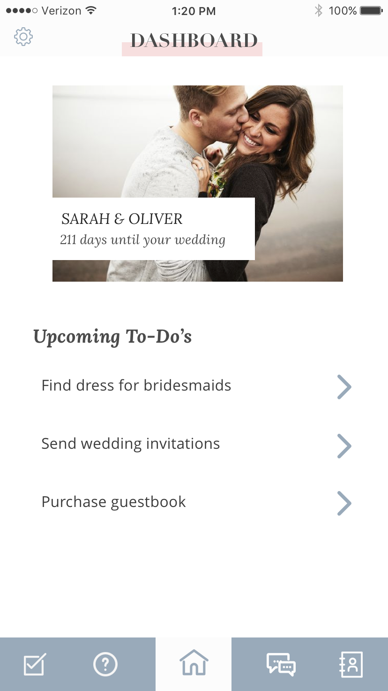
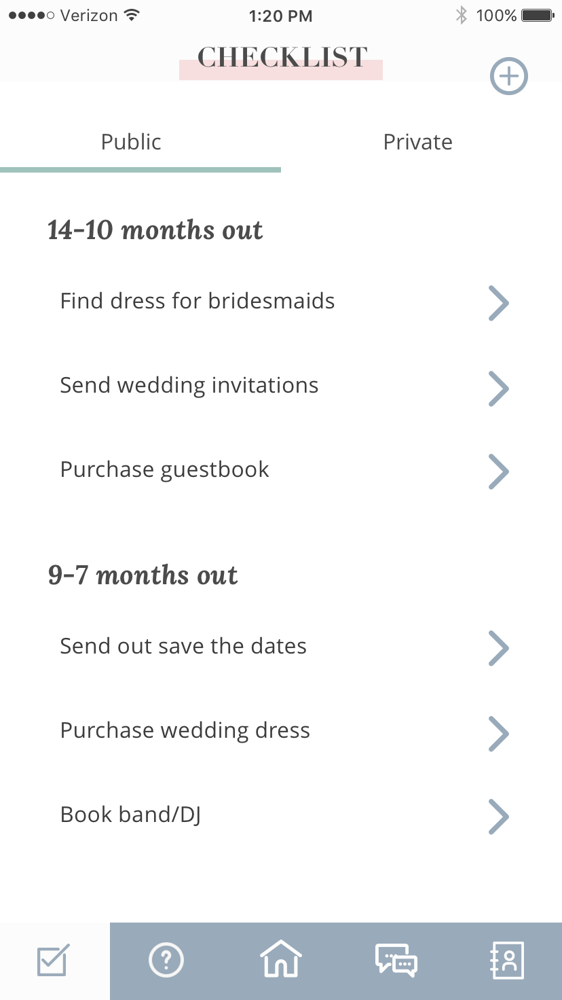
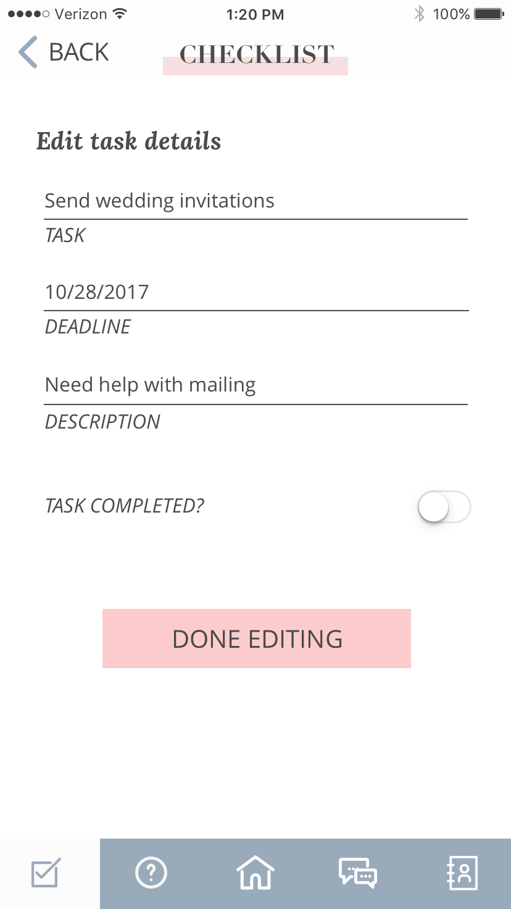
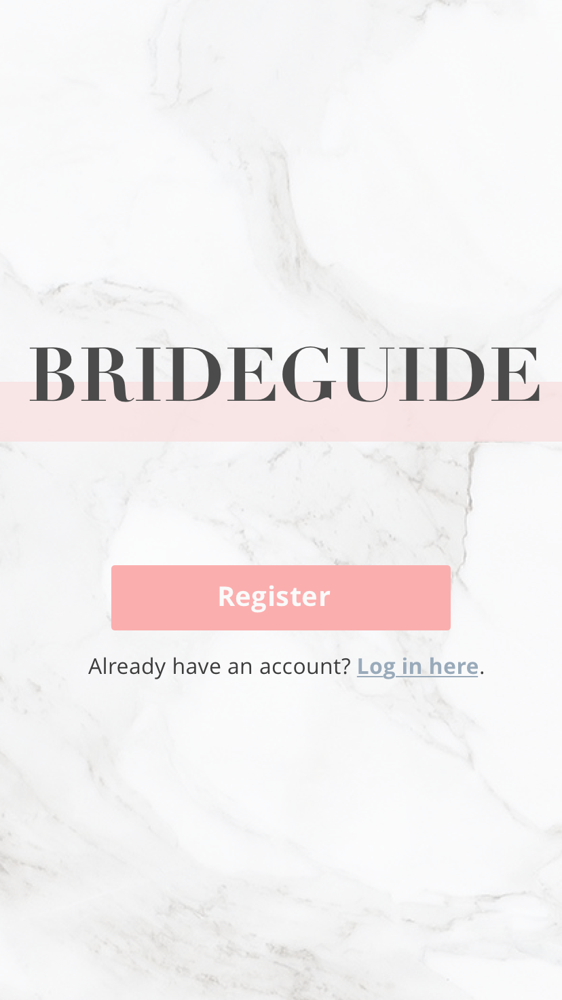
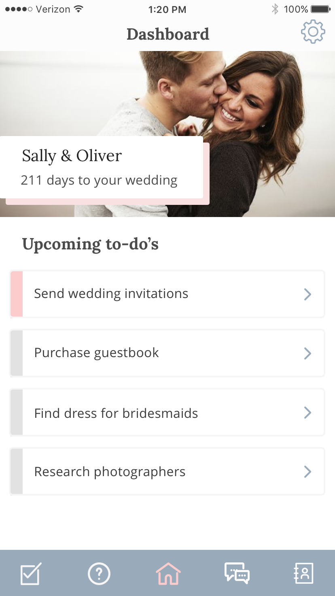
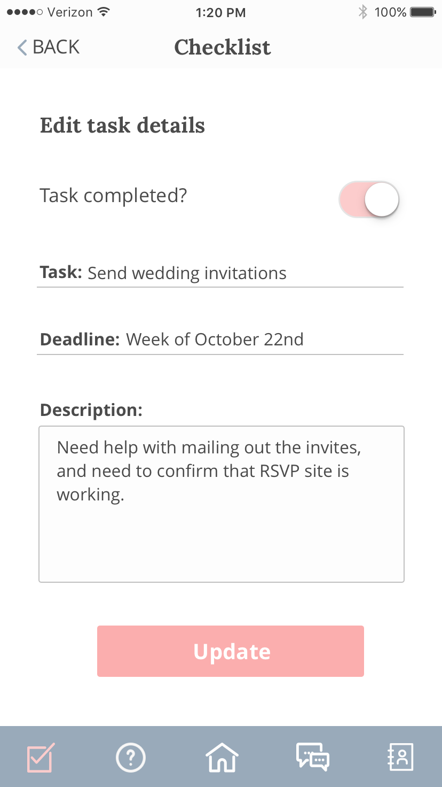
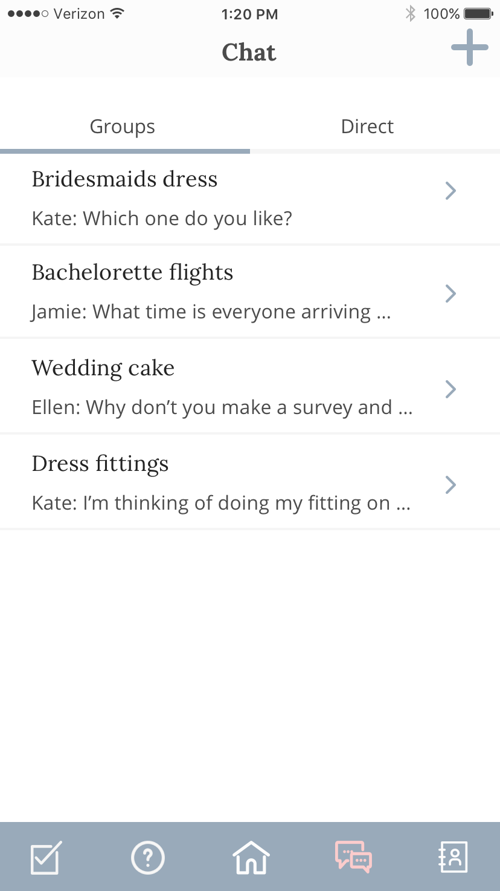

Planning a wedding is no small feat. Decisions have to be made, images are shared, and opinions must be gathered from different social circles. BrideGuide is an upcoming iOS app that will serve as a collaboration tool for brides managing their weddings, bachelorette parties, and bridal showers. While there are plenty of existing wedding planning tools out there, BrideGuide aims to be the most collaborative, seamless, and social, with features for chat, task assignments, and surveying.
Our team worked with the founders of BrideGuide to create the visual design for the iOS app and delivered style tiles, screen mock-ups, prototypes, and a style guide.
The existing brand material we were given already had an already existing color palette, which were varying shades of a muted/pale pink.

Our team identified the key challenge as we moved into designing BrideGuide over the next three weeks: How do we design BrideGuide to be as feminine, fun, and personal as the experience of planning a wedding should be, while ensuring that the app still comes across as professional and sophisticated?
We conducted a visual competitive analysis and found that all wedding apps on the market lacked the fundamental strong visual hierarchy that most successful productivity apps had. With deeper understanding where BrideGuide could fit in within the market of wedding planning and productivity apps, our team created three design principles to guide our designs moving forward.
1) It’s your big day
The design of BrideGuide will be versatile by allowing the bride to connect to the planning process and make the experience her own.
2) Let us do the heavy lifting
Keep the bridal party involved and accountable without tension. Content should be scannable, which makes it easier for them to stay up to date and help when needed.
Spread the love
Connecting with one another should be an enjoyable and fun experience. There is a camaraderie that forms when participating in such a celebratory occasion. Design elements should promote a friendly tone and feeling.
With the design principles and competitive research findings in mind, I created style tiles for client review. After reviewing several different directions with the client, we converged into the following style direction:

Although the clients were surprised at the change in color palette, they did begin to warm up to the idea of introducing more colors and using pink more sparingly to achieve the same goals of femininity and modernity.
Using our research and clients’ direction, I created my first round of screen mock-ups. I used a marble texture and clean white space to create sophistication. Pink was only used in key CTA areas, and strong visual hierarchy in headers helped users easily scan content-heavy lists. Our user pool consisted of a mix of bride-to-be’s and bridal party members, providing us with a good mix of user feedback.
  
During user testing many users described my design was clean, modern, and feminine. Many users also commented that the app definitely felt geared towards female, even though there was a minimal use of pink – this was a piece of user feedback that helped further our team’s case with the client on utilizing a different color palette for BrideGuide.
The main critique for my designs from users was all elements on the page looked as if they were floating due to an awkward use of white space. As I moved forward into my final iterations of the design, I continued to user test different solutions to anchor the elements on my design.
 
To resolve the issue of “floating” elements on the page, items on the dashboard page utilize white space more efficiently and are anchored with the use of status boxes. A status of pink denotes that a task is completed. The drop shadow is used to draw attention to the name of the couple and countdown, to add an emphasis on personalization.
 
Chat pages are anchored with dividers, and patterns on this page reflect existing familiar chat interfaces such as Messenger or GroupMe. My final design of BrideGuide succesfully portrayed BrideGuide is a feminine and modern wedding planning tool through the use of solid drop shadows and simple line iconography. The usage of serif type for headers and use of marble texture gave the brand a sense of sophistication. Lastly, the strong visual hierarchy across all screens allowed for the productivity features of the app to shine through.
BrideGuide was my first exploration into user testing, and after experiencing the process on reiterating my designs based on user feedback, I can’t imagine how I would ever create any designs without that crucial part of the process. I found user testing to be such a powerful tool to push my design past my own personal preferences, and to gather feedback for justifying design decisions that the client might not be initially open to.
While I’m proud of the work I put together for BrideGuide, if given more time I would address the following concerns:
Allow users to add colors to their to-do tasks based on priority
My current design only contains two status list colors, pink and grey, to note whether a task is completed or not. Most productivity apps have at least three different status colors for users to note the importance of each task. I would like to add something similar to the checklist functionality, but would need to test what status colors would fit with the BrideGuide brand. I would also like to test UX functionality of what types of task statuses brides find most helpful in planning a wedding.
Continue to test the sizing of the profile photo and countdown with both brides and bridal party
Most users enjoyed seeing the large profile photo and countdown. However, some users noted that the profile picture was a little too large for their liking, and they wanted to see more space given to their upcoming tasks. I kept the priority on the larger photo because it follows our design principle of putting an emphasis on personal elements of the app, however if given more time, this is a feature that I’d like to continue to test.
Continue to test iconography
Many users were confused by what the icons in the bottom navigation were meant to represent. Although a quick exploration of the bottom nav and association with the header on each screen answered their questions during user testing, I want to improve the iconography used by making it more intuitive.